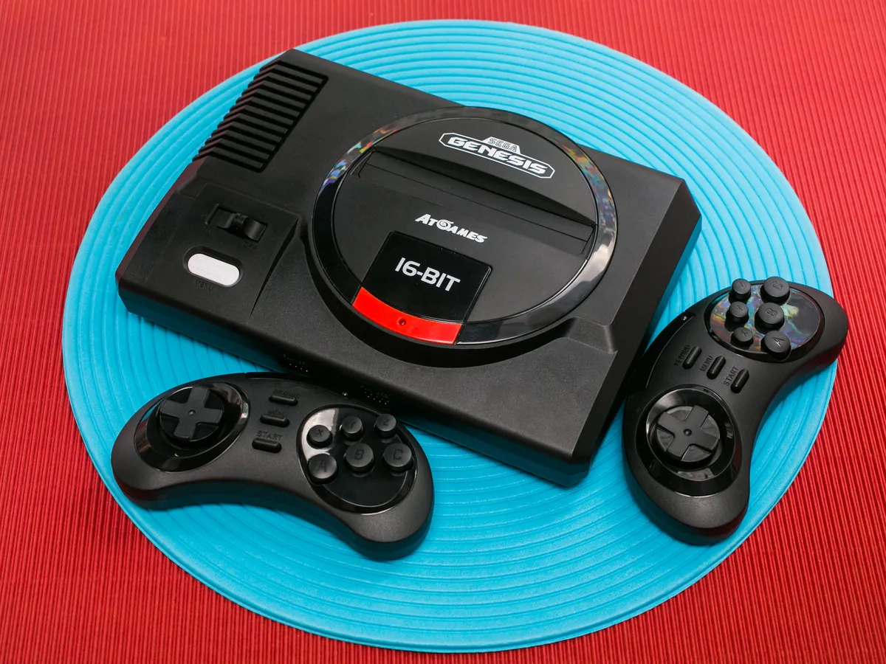
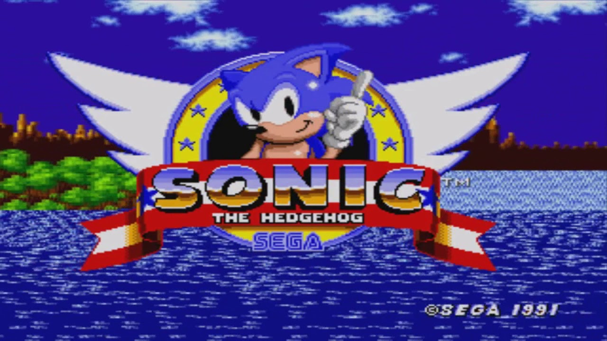
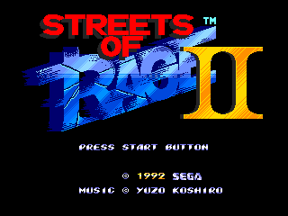
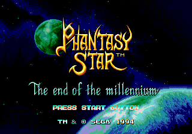
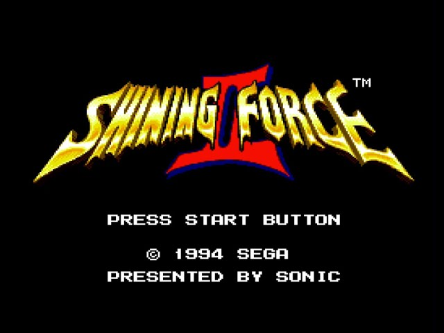
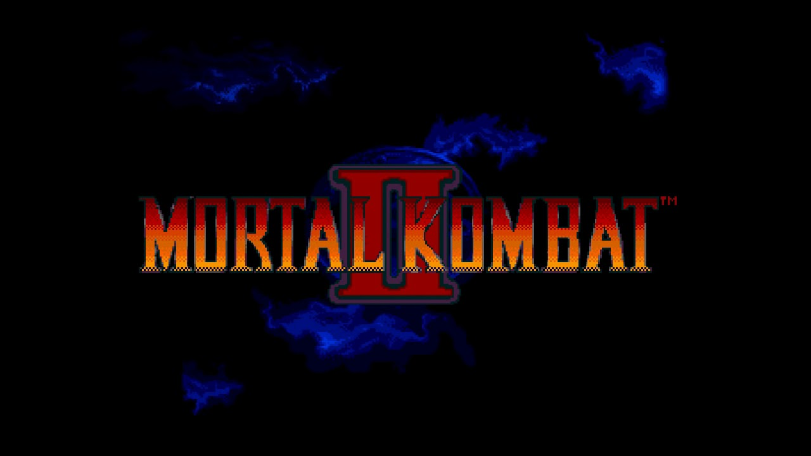

Sega Genesis
The Sega Genesis, known as the Mega Drive in regions outside of North America, was a trailblazing 16-bit gaming console that left a significant mark on the gaming industry. Released in 1988 in Japan and later in North America in 1989, the Genesis offered powerful hardware that allowed for advanced graphics and sound capabilities compared to its 8-bit predecessors. This technological leap paved the way for a new era of gaming experiences characterized by faster gameplay, more detailed visuals, and richer audio.

One of the defining features of the Sega Genesis was its iconic "blast processing," a term coined by Sega to describe the console's ability to render graphics and animations at high speeds. This feature was prominently showcased in games like "Sonic the Hedgehog," Sega's flagship franchise that became synonymous with fast-paced action and vibrant, colorful worlds. The Genesis's hardware prowess, coupled with innovative game design, contributed to the console's popularity and competitive edge against rival platforms.
The Genesis also boasted a diverse and impressive library of games, ranging from platformers and action-adventure titles to sports simulations and arcade classics. Titles like "Streets of Rage," "Phantasy Star IV," and "Shining Force" showcased the console's capabilities and captured the imaginations of gamers worldwide. Additionally, the Genesis introduced the concept of add-on peripherals such as the Sega CD and Sega 32X, expanding its capabilities and offering new gaming experiences to its dedicated fanbase.
Titles
Sonic The Hedgehog
As the flagship franchise of the Sega Genesis, "Sonic the Hedgehog" revolutionized platformer games with its blazingly fast gameplay, colorful graphics, and iconic characters. Released in 1991, the game introduced players to Sonic, a blue hedgehog with a need for speed, as he raced through loop-de-loops, collected rings, and thwarted the evil Dr. Robotnik's plans. "Sonic the Hedgehog" not only showcased the Genesis's capabilities but also became a cultural phenomenon, spawning numerous sequels, spin-offs, and multimedia adaptations that continue to delight fans to this day.
Streets of Rage 2
This classic beat 'em up game, released in 1992, elevated the genre with its polished graphics, tight controls, and memorable soundtrack. Players could choose from a diverse cast of characters, each with unique fighting styles, as they battled through gritty urban environments to take down criminal syndicates. "Streets of Rage 2" is often praised for its co-op gameplay, challenging enemies, and satisfying combat mechanics, making it a standout title in the Genesis library and a favorite among retro gaming enthusiasts.
Phantasy Star IV
Considered one of the finest RPGs on the Genesis, "Phantasy Star IV," released in 1993, offered a deep and engaging sci-fi fantasy experience. Players embarked on an epic journey across multiple planets, battling monsters, unraveling mysteries, and recruiting a diverse party of characters with their own backstories and abilities. The game's branching narrative, strategic turn-based combat, and stunning visuals pushed the boundaries of what RPGs could achieve on the Genesis, earning it critical acclaim and a dedicated fan following.
Shining Force II
This tactical RPG, released in 1993, captivated players with its compelling storyline, strategic battles, and charming visuals. Building upon the success of the original "Shining Force," this sequel expanded the scope of the game with larger maps, more recruitable characters, and deeper customization options. Players led a group of heroes on a quest to save their kingdom from an ancient evil, engaging in grid-based battles that required careful planning and tactical prowess. "Shining Force II" remains a beloved title among RPG enthusiasts for its engaging gameplay and memorable characters.
Mortal Kombat II
The Genesis version of "Mortal Kombat II," released in 1994, stood out for its faithful arcade port and controversially realistic graphics and violence. The game featured an expanded roster of fighters, enhanced special moves, and intense one-on-one combat that tested players' reflexes and skill. Despite the controversy surrounding its content, "Mortal Kombat II" was a commercial success and a favorite among fighting game fans, showcasing the Genesis's ability to deliver arcade-quality experiences at home.
